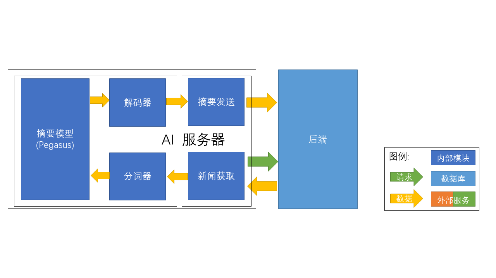

后端¶
架构设计¶


设计原则¶
- 独立计算：AI摘要是一项计算密集型任务，不宜直接在后端进行，因此需将AI摘要模块独立放置于外部服务器运行。
- 弹性计算：AI摘要的服务需求是弹性的，仅在高峰期需要大量计算资源。同时AI计算的成本是高昂的。因此使用模块化设计，后端可以与多个AI模块相连。通过增减与后端相连的AI模块，可以弹性改变AI算力，节约运算成本。
- 高可用性：AI摘要的实现技术多样、迭代升级快。使用模块化设计可使AI摘要服务的变更不影响后端服务可用性。
功能设计¶
AI摘要¶
摘要模型¶
输入新闻内容token_ids，输出新闻摘要token_ids
分词器¶
输入新闻内容字符串，输出新闻内容token_ids
解码器¶
输入新闻摘要token_ids，输出新闻摘要字符串
服务器¶
摘要发送¶
将新闻摘要发送至后端
新闻获取¶
从后端获取待摘要的新闻
实现¶
项目结构¶
│ .pycodestyle # pycodestyle配置文件
│ .pylintrc # pylint配置文件
│ pytest.ini # pytest配置文件
│ tests.py # 单元测试
│
├─config
│ config.json # AI服务器配置
│
└─summarize
Pegasus.py # 摘要模型
server.py # 服务器
AI摘要¶
加载模型¶
实现函数： summarize.Pegasus.load_model(model_name, tokenizer_name)
根据model_name，tokenizer_name加载摘要模型和分词器（包括解码器）。
生成摘要¶
实现函数： summarize.Pegasus.generate_summary(text)
生成text的文本摘要。
服务器¶
实现类： summarize.server.AIServer(adapter, server, scan_interval, model, tokenizer)
| 参数 | 含义 |
|---|---|
adapter |
通信协议 |
server |
后端服务器 |
scan_interval |
新闻获取间隔 |
model |
模型名 |
tokenizer |
分词器名 |
初始化¶
根据model和tokenizer执行加载模型
运行： self.main()¶
根据scan_interval定期从后端获取待摘要新闻，生成摘要，并向后端发送摘要。
获取待摘要新闻： self.get_news()¶
从后端获取多条待摘要新闻。
发送摘要：self.post_summary(summaries_list)¶
将多条新闻摘要发送至后端。